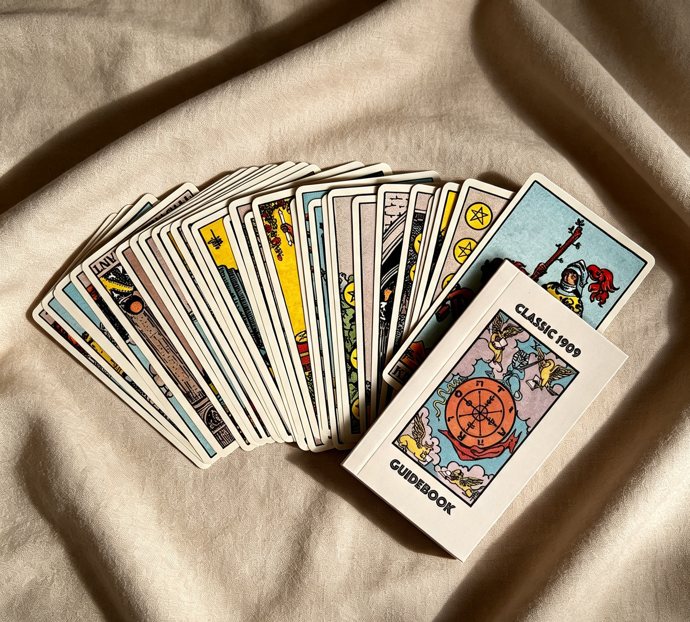

✨ Our Deck: The 1909 Rider–Waite–Smith Tarot
At MyTarot.Day we use exclusively the authentic 1909 Rider–Waite–Smith Tarot — the deck that changed the history of Tarot forever. Commissioned by scholar Arthur Edward Waite and illustrated by artist Pamela Colman Smith, it was the first deck to give every single card a complete, detailed scene rather than abstract symbols.

Before this deck, many Tarot cards showed only simple emblems — cups, swords or wands arranged without story or context. Pamela Colman Smith changed that: she filled every card with people, landscapes, actions and details that told a clear story. Suddenly, anyone could look at The Fool stepping toward the edge of a cliff, or The Lovers standing before an angel, and understand the meaning at a glance.
Because of this thoughtful design, the Rider–Waite–Smith deck became the foundation for nearly all modern Tarot decks. It is studied, referenced and used by beginners and experts alike across every continent. More than a century later, its imagery remains vivid, meaningful and deeply human.
We chose this deck because it honors tradition while making wisdom accessible. Every reading you receive here carries the original symbols, scenes and intention preserved since 1909 — authentic, respectful and true to the source that gave Tarot its modern face.